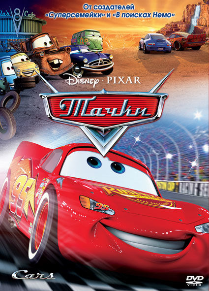
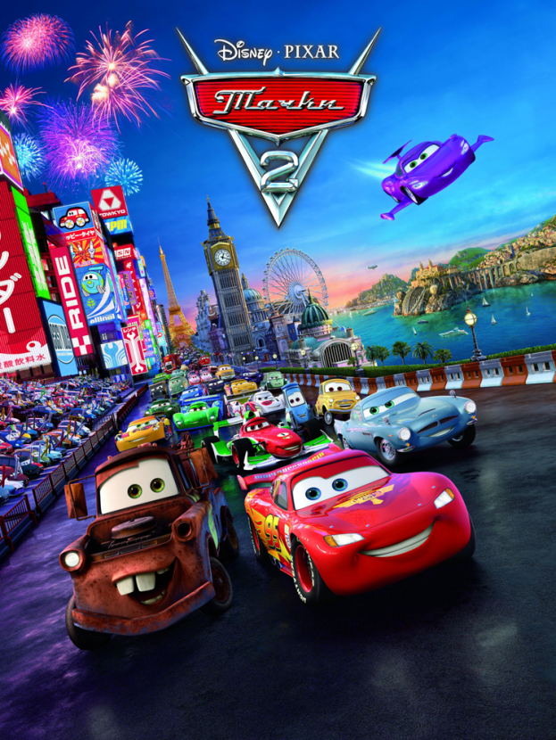
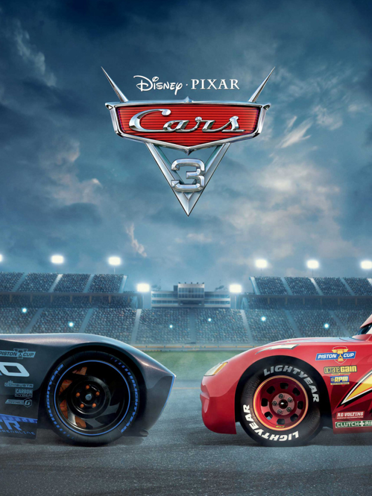

Тачки
На земле, населённой антропоморфными говорящими машинами, финальная гонка Кубка Поршня заканчивается трехсторонней ничьей между уходящим на пенсию ветераном Чипом «Кингом» Тюнингом, частым призёром Чико Хиксом и дерзким новичком-сенсацией Молнией МакКуином; решающая гонка запланирована через неделю на международной автостраде в Калифорнии. МакКуин отчаянно пытается выиграть гонку, ведь он не только станет первым новичком, выигравшим Кубок Поршня, но он также сможет сменить непривлекательного спонсора Ржавейку, компанию по производству мазей для бамперов, и занять место Кинга в престижной и прибыльной команде Диноко. Стремясь добраться до Калифорнии как можно скорее, он торопит свой седельный автопоезд Мак, чтобы ехать всю ночь. Пока МакКуин спит, Мак задремал, а когда внезапно проснулся, то МакКуин выпал с задней части трейлера на дорогу. МакКуин просыпается на оживленной дороге и съезжает с шоссе в поисках Мака, но вместо этого попадает в заброшенный пустынный город Радиатор-Спрингс, где сильно повреждает главную дорогу.
На следующий день городской судья Док Хадсон приказывает МакКуину немедленно покинуть город, но местный адвокат Салли просит назначить МакКуину общественные работы для ремонта дороги, на что Док неохотно соглашается. Все ещё спеша покинуть город, МакКуин некачественно ремонтирует дорогу и получает указание отремонтировать её снова. За это время он привязывается к городу и становится другом для нескольких его жителей. Он узнает, что Радиатор-Спрингс когда-то был популярной остановкой на Трассе 66, пока его не обошла в обход Система межштатных автомагистралей США, и в результате город оказался забыт. Также стало известно, что Док был «Хадсоном Хорнетом», трехкратным чемпионом Кубка Поршня, карьера которого закончилась преждевременно из-за серьёзной аварии. МакКуин привязывается к Салли, которая обрела счастье, оставив быструю жизнь в Лос-Анджелесе, переехала в Радиатор-Спрингс и теперь мечтает вернуть город на карту. МакКуин заканчивает ремонт дороги, воодушевляет жителей города и решает провести дополнительный день в Радиатор-Спрингс со своими новыми друзьями, но его пребывание внезапно прерывается, когда в город приезжают Мак и СМИ. МакКуин неохотно уезжает в Калифорнию, чтобы успеть к гонке, в то время как Салли злится на Дока, выяснив, что он рассказал СМИ о местонахождении МакКуина.
На гонке МакКуин едет растерянно и вскоре оказывается на последнем месте. Затем он с удивлением обнаруживает, что Док, поняв свою ошибку, занял место руководителя его команды, а несколько других его друзей из Радиатор-Спрингс помогают на пит-стопе. Вдохновленный и вспомнив трюки, которым он научился у Дока и его друзей, МакКуин выходит в лидеры, но на последнем круге Чико, не желая снова проигрывать Кингу, ударяет по борту и отправляет Кинга в опасную аварию. Вспоминая судьбу Дока, МакКуин останавливается совсем рядом с финишной чертой, позволяя Чико победить, и возвращается, чтобы дотолкать Кинга за финишную черту. В результате разгневанная толпа и СМИ осуждают победу Чико, но восхваляют спортивное поведение МакКуина. МакКуину предлагают спонсорство Диноко, но он отказывается и остаётся с Ржавейкой из-за их поддержки в прошлом. Вернувшись в Радиатор-Спрингс, МакКуин воссоединяется с Салли и объявляет, что он создаст в городе свою гоночную штаб-квартиру и тем самым вернет Радиатор-Спрингс на карту, а также становится учеником Дока.

Тачки 2
Британский шпион Финн Макмисл проникает на нефтяную вышку, принадлежащую группе машин с дефектом, чтобы спасти другого шпиона — Леландо Турбо, который предварительно отправил видеосообщение. Он становится свидетелем того, как машины, по-видимому, возглавляемые профессором Цундаппом, загружают в один из ящиков излучатель электромагнитного импульса, замаскированный под телекамеру. Узнав, что агент, которому он пришёл на помощь, мёртв, Финн сбегает, подстраивая свою смерть.
Молния МакКуин, теперь четырёхкратный чемпион Кубка поршня после недавней смерти своего наставника Дока Хадсона, возвращается в Радиатор-Спрингс. Итальянский гонщик формулы автомобиль Франческо Бернулли, бросает вызов МакКуину для участия в гонке на недавно созданном Мировом Гран-при. Его организатор Сэр Майлс Карданвал намерен продвигать своё новое экологически чистое топливо Аллинол. МакКуин и его лучший друг Мэтр — вместе с Луиджи, Гвидо, Филмором и Сержантом — отправляются в Токио на первую гонку Гран-При
На промоакции мирового Гран-При Мэтр устраивает сцену после утечки масла и поедания миски васаби, разозлив МакКуина. Пока Мэтр приводит себя в порядок, он останавливает драку между американским шпионом Родом «Движком» Редлайном (с которым Макмисл и его новый партнер Холли Делюкс пытаются встретиться) и дефектными машинами Грэмом и Эйсером. Редлайн вынужден передать важную информацию Мэтру. Тем временем, Редлайн схвачен и убит профессором Цундаппом, который рассказывает, что Аллинол загорается при попадании импульса ЭМИ. Цундапп сообщает своему руководителю, неизвестному злодею, что Редлайн передал информацию. Холли ошибочно принимает Мэтра за Редлайна и вербует его, чтобы сорвать заговор Цундаппа.
На первой гонке три машины загораются из-за телекамеры. МакКуин занимает второе место в гонке после Бернулли, потому что Мэтр случайно дал ему плохой совет, пытаясь убежать от приспешников Цундаппа с помощью Холли и Финна. В итоге, МакКуин ссорится с ним. Огорчённый Мэтр решает вернуться в Радиатор-Спрингс, оставив Маккуину записку с извинениями. В аэропорту его перехватывает Макмисл, который, будучи всё ещё уверенным в том, что Мэтр — американский шпион, посвящает его в планы профессора Цета. После поездки в Париж, чтобы получить больше информации от старого друга Финна Макмисла — торговца Тумбера, машины отправляются в Порто Корса, Италия, где проводится следующая гонка. Во время гонки Мэтр проникает на собрание преступников, в это время камера, которую направляют ещё на нескольких автомобилях, приводит к массовому столкновению автомобилей, в результате МакКуин финиширует первым. Из-за возросших опасений за безопасность Аллинола, Сэр Майлс Карданвал отменяет требование использовать его для финальной гонки. Однако, когда МакКуин, ещё не подозревающий ничего плохого, решает продолжить его использовать. Профессор Цет в бешенстве приказывает преступникам убить МакКуина на следующем этапе в Лондоне, так как он срывает их планы. Эта новость пугает Мэтра и он случайно выдает себя. Ему удается сбежать, однако его всё равно ловят и берут в плен, как Финна и Холли.
Когда Мэтр приходит в себя, выясняется, что его, Финна и Холли держат внутри часов Биг-Бена, где Мэтр признаётся, своим «коллегам», что он не секретный агент, как они думали. Мэтр узнаёт, что камера не сработала на МакКуине, но преступники говорят ему, что они заложили бомбу в пит-стопе в качестве резервного плана, побуждая Мэтра сбежать. Финн и Холли вскоре также сбегают, но понимают, что бомба находится в воздушном фильтре Мэтра. Мэтр уже прибыл в пит-стоп, когда ему говорят об этом. К несчастью, МакКуин замечает Мэтра и едет ему навстречу, чтобы извиниться за свою вспыльчивость.
Понимая, что катастрофа близка, Мэтр пытается отдалиться от друга на безопасное расстояние и объяснить, что они оба в опасности, но Маккуин его не слушает. Он просит прощения у Мэтра за ссору в Токио и стремительно нагоняет его. Бомба, однако, не срабатывает из-за того, что Мэтр и Маккуин оказываются вне зоны действия. Финн задерживает профессора Цундаппа, пытающегося сбежать. На бомбе включается таймер. Оказывается, что она оборудована голосовым датчиком, но голоса Цета и Мэтра он не распознаёт. Арестованный Цундапп объясняет, что обезвредить бомбу может только голос того, кто её установил. Приезжают другие дефектные машины, их значительно больше, но Финна, Холли, Мэтра и МакКуина вскоре спасают прибывшие жители Радиатор-Спрингс, армия и полиция.
Мэтр и МакКуин отправляются в Букингемский дворец, где Мэтр рассказывает, что Сэр Майлс Карданвал является вдохновителем заговора. Общественность в шоке, но Мэтр уверен в своем обвинении. Удивлённый Майлс отпирается до последней секунды, однако потом ему уже ничего не остаётся, кроме как обезвредить бомбу. В довершение ко всему, когда Мэтр открывает Карданвалу его капот, выясняется, что на самом деле он не первый в мире электромобиль, а простая дефектная машина с двигателем внутреннего сгорания, и что якобы изобретённый им «Аллинол» — никакое не эко-топливо, а самый обычный бензин. После того, как Сэр Майлс Карданвал арестован, Мэтр получает почётное рыцарство от королевы Великобритании.
Вернувшись в Радиатор-Спрингс, Сержант рассказывает, что он поменял топливо МакКуина с Аллинола на органическое биотопливо Филмора, объяснив, почему камера на него не сработала. Проводится «Гран-при Радиатор-Спрингс» с участием всех претендентов на Мировом Гран-при. Мэтр вежливо отклоняет приглашение Финна и Холли отправиться на следующую миссию, решив остаться в Радиатор-Спрингс, со своей семьей. Однако, они позволяют ему оставить реактивные турбины, так что теперь он может соревноваться со своим лучшим другом. Фильм заканчивается, тем как МакКуин и Мэтр с улыбками ускоряются в гонке, в то время как самолет Финна и Холли улетает вдаль.

Тачки 3
Во время окончания одной гонки Молния Маккуин знакомится с Джексоном Штормом, высокомерным гонщиком, который является машиной следующего поколения, использующего новейшие технологии для повышения производительности. Поскольку всё больше и больше автомобилей нового поколения начинают участвовать в гонках, другие гонщики постепенно уходят в отставку или увольняются их спонсорами. Во время финальной гонки Молния пытается обогнать Джексона, но у него перегревается двигатель и лопается шина. В результате этого он теряет контроль над управлением и переворачивается.
Спустя четыре месяца Молния возвращается в Радиатор-Спрингс и размышляет об аварии своего покойного наставника Дока Хадсона, который так же завершил свою карьеру. Он рассказывает своей подруге Салли Каррере, что он не хочет быть принуждённым к уходу в отставку, как Док, и решает снова продолжить тренировку, ища новые способы вернуться к гонкам.
Звяк и Бряк, владельцы компании «Ржавейка», отправляют Молнию в тренировочный центр, который открылся совсем недавно. Когда он пришёл туда, Звяк и Бряк говорят ему, что они продали свою компанию новому владельцу Стерлингу, который поручает ему работать с тренером по имени Крус Рамирес. Молния становится нетерпелив из-за упражнений, которые Крус заставляет его выполнять. Он пытается использовать высокотехнологичный гоночный симулятор, но из-за того, что ему ещё рано испытывать это оборудование, он теряет контроль и врезается в экран.
Стерлинг говорит, что Молнии придётся забыть о гонках. Вместо этого Молния предлагает ему сделку: если он сможет выиграть первую гонку во Флориде 500, он может продолжать гонку по своему желанию; в противном случае он немедленно уйдёт в отставку. Стерлинг соглашается и отправляет Крус работать с ним один на один на близлежащем пляже.
Вместо того, чтобы улучшить свою максимальную скорость для победы над Джексоном, Молния проводит большую часть дня, помогая Крус привыкнуть к гонкам на песке. Они отправляются на «Округ Грома», где Док гонялся и побеждал в дерби, которое Крус в конечном счёте выигрывает. Когда Молния злится на Крус из-за потраченного времени, она говорит, что хотела участвовать в гонках, когда была моложе, но никогда не начинала гонку из-за неуверенности в себе. Она уезжает, чтобы вернуться обратно в центр.
Увидев новость о новом скоростном рекорде Джексона, Молния звонит Мэтру для получения некоторых советов. Мэтр предлагает ему найти наставника Дока по имени Выхлоп. Молния зовёт обратно Крус, и они отправляются в Томасвилль, родной город Дока, где они встречаются с Выхлопом и несколькими старыми друзьями Дока. Молнию начинают тренировать с помощью методов, с которыми он сможет перехитрить Джексона, а не победить его чистой скоростью. Выхлоп говорит, что, хотя Док на долгое время замкнулся в себе и больше не гонял после аварии в 1954-ом, но зато он всегда был счастлив, когда тренировал Молнию. Во время финальной гонки Молния начинает вспоминать о своей аварии и проигрывает Крус.
На гонках во Флориде Молния видит, что Выхлоп и его с Доком друзья подбадривают его, а Крус тем временем наблюдает за гонкой. Стерлинг ищет её и приказывает ей вернуться в тренировочный центр, но Молния просит Крус вернуться обратно и закончить его гонку, а команда экипирует её для гонок, и даёт ей номер Молнии, чтобы она могла занять его место. На последнем заезде Джексон пытается прижать Крус к стене, но она совершает над ним сальто, какое когда-то использовал и Док, обгоняет его и выигрывает. Молнию и Крус объявляют победителями. Крус уходит с работы Стерлинга и принимает предложение участвовать в гонках за «Диноко».
Позже, в Радиатор-Спрингс, Маккуин присваивает Крус номер Дока Хадсона, затем он и Рамирес проводят тренировочную гонку, используя свои новые навыки. Молния перекрасился в гоночные цвета Дока, а также присвоил себе титул «стремительный», чтобы почтить память своего наставника. «Диноко» купил «Ржавейку» Стерлинга, а Молния решает продолжить участвовать в гоночном спорте и тренировать Крус.